A fundação visual do ecossistema C-beauty da Klasmē.
Tipografia, cor, componentes e movimento — documentados e prontos para construir cada página de marca, com o mesmo rigor e a mesma sofisticação.
Carregamento
Google Fonts via CDN, com rel="preconnect" para
fonts.googleapis.com e
fonts.gstatic.com, e font-display: swap
para evitar texto invisível durante o carregamento.
Pilha de fallback
Cada família declara um fallback genérico do sistema — serif para
display/accent e sans-serif / monospace
para o restante — garantindo layout estável antes do carregamento do webfont.
Pesos carregados
ink-950 · neutral / base
#050505 · rgb(5,5,5) · hsl(0,0%,2%)
Fundo primário de todas as páginas. Contraste AAA contra ivory-50 e gold-400.
ink-900 · neutral / surface
#0a0a0a · rgb(10,10,10) · hsl(0,0%,4%)
Superfícies elevadas: cards, navbars, faixas de marquee sobre o fundo base.
ink-800 · neutral / border
#121212 · rgb(18,18,18) · hsl(0,0%,7%)
Bordas e divisores sutis sobre fundo escuro; nunca usado em texto.
ivory-50 · neutral / inverse
#f7f4ee · rgb(247,244,238) · hsl(40,36%,95%)
Texto principal sobre fundo escuro; fundo de seções claras (editorial).
ivory-200 · neutral / muted
#e9e3d8 · rgb(233,227,216) · hsl(35,29%,88%)
Texto secundário e ícones de apoio sobre fundo escuro.
gold-500 · primary / accent
#c9a15a · rgb(201,161,90) · hsl(38,51%,57%)
CTA primário, bordas de destaque, ícones ativos. AA contra ink-950; usar texto ink-950 sobre este fundo.
gold-400 · primary / hover
#e6cf9e · rgb(230,207,158) · hsl(41,59%,76%)
Estado hover de botões dourados e realces tipográficos (itálico, links).
gold-600 · primary / active
#a67c3d · rgb(166,124,61) · hsl(35,46%,45%)
Estado pressed/active de botões e realces sobre fundo claro.
gold-700 · primary / border
#7c5b28 · rgb(124,91,40) · hsl(35,51%,32%)
Bordas douradas discretas sobre fundo escuro; nunca como texto.
success · feedback
#8fae7c · rgb(143,174,124) · hsl(97,24%,58%)
Confirmações de formulário (ex.: inscrição enviada). Verde sálvia, nunca neon.
warning · feedback
#d9b06a · rgb(217,176,106) · hsl(38,59%,63%)
Alertas não-críticos, estoque baixo, avisos de formulário.
danger · feedback
#d98a8a · rgb(217,138,138) · hsl(0,51%,70%)
Erros de formulário e falhas de envio. Vermelho suave, sem estridência.
Rampa de opacidade — gold-500
Gradientes decorativos
Aurora Gold (títulos em destaque) · Vignette (overlay sobre imagens/cards)
Microinteração (todos os variantes, exceto disabled):
el.addEventListener("mouseenter", () =>
gsap.to(el, { scale: 1.035, duration: .25, ease: "power2.out" }));
el.addEventListener("mouseleave", () =>
gsap.to(el, { scale: 1, duration: .25, ease: "power2.out" }));Insira um e-mail válido.
Marca
Card de marca
Imagem + overlay gradiente + eyebrow dourado
05
marcas em curadoria
"Elegância silenciosa, curadoria exclusiva."
Estado padrão — glass translúcido sobre o hero. No scroll, a navbar ganha bg-ink-950/90 + backdrop-blur sólido.
Entrada: fade + scale 0.94→1, 400ms power3.out · Saída: 250ms power2.in
CSS puro · fade + translateY(4px→0), 200ms ease
data-reveal
Surgimento padrão de qualquer elemento: opacidade + leve subida + desfoque, disparado no load (hero) ou ao entrar em viewport (demais seções, once).
gsap.set("[data-reveal]", { autoAlpha:0, y:26, scale:.98, filter:"blur(10px)" });
gsap.to(items, { autoAlpha:1, y:0, scale:1, filter:"blur(0px)",
duration:1.1, stagger:.07, ease:"power3.out",
scrollTrigger:{ trigger:section, start:"top 78%", once:true }});data-hero-word
A palavra-marca gigante ao fundo do hero: entra em escala + blur, depois se move em paralaxe lento conforme o scroll.
gsap.to("[data-hero-word]", { yPercent:8, scale:1.03, ease:"none",
scrollTrigger:{ trigger:"section:first-child",
start:"top top", end:"bottom top", scrub:1.6 }});data-float
Flutuação suave e contínua em elementos decorativos ou cards flutuantes — nunca aplicado a texto de leitura. Sempre encadeada dentro da própria timeline de entrada do elemento (nunca como um tween solto e imediato), para o loop nascer exatamente de onde a entrada parou, sem salto.
hero.to(el, { autoAlpha:1, y:0, ... }) // entrada
.to(el, { y:-18, rotate:1, ease:"sine.inOut",
repeat:-1, yoyo:true, duration:4.5 }); // loop, encadeadodata-parallax + data-speed
Camadas decorativas (orbs, blobs de luz) se deslocam em velocidade própria conforme o scroll, dando profundidade ao fundo.
gsap.to(layer, { yPercent: speed*100, ease:"none",
scrollTrigger:{ trigger:section, start:"top bottom",
end:"bottom top", scrub:1.2 }});Magnetic hover (botões e links)
Todo button e a ganha um leve aumento de escala ao passar o mouse — a assinatura tátil do sistema.
gsap.utils.toArray("button, a").forEach(el => {
el.addEventListener("mouseenter", () =>
gsap.to(el, { scale:1.035, duration:.25, ease:"power2.out" }));
el.addEventListener("mouseleave", () =>
gsap.to(el, { scale:1, duration:.25, ease:"power2.out" }));
});Marquee & noise overlay
Faixa de texto em loop infinito (CSS puro, pausa no hover) e uma leve textura de ruído SVG sobre fundos escuros, para tirar a chapadez do preto.
@keyframes ks-marquee { from{transform:translateX(0)} to{transform:translateX(-50%)} }
.ks-marquee:hover .ks-marquee-track { animation-play-state:paused; }Exemplo de modal
Entrada em fade + scale via GSAP, backdrop com blur — o mesmo padrão usado em qualquer diálogo do sistema.